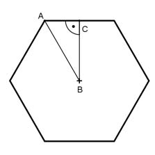
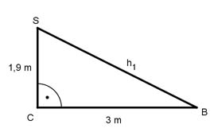

Aufgabe 238 Ein Pavillon hat als Dach eine regelmäßige sechseckige Pyramide. Sie hat Seiten von 3,5 m Länge und eine Höhe von 1,9 m. Wie teuer wird die Bedachung aus Kupfer, wenn 1 m2 105 € kostet?

In einem regelmäßigen Sechseck sind die Seiten gleich lang wie der Radius. Satz von Pythagoras im Dreieck ABC: AB = Seitenlänge = 3,5 m = r BC = h AC = halbe Seitenlänge = 3,5 m/2 = 1,75 m AB2 = BC2 + AC2 3,52 m2 = h2 + 1,752 m2 | -1,752 m2 h2 = 3,52 m2 - 1,752 m2 h2 = 9,1875 m2 |√ h = 3 m Seitenhöhe h1:
Satz von Pythagoras im Dreieck CBS: h12 = 32 m2 + 1,92 m2 h12 = 12,61 m2 |√ h1 = 3,55 m Sechseckdachfläche A: 3,5 m * 3,55 m A = 6 * ----------------- = 37,275 m2 2 Kosten = 37,275 m2 * 105 €/m2 = 3 914 €